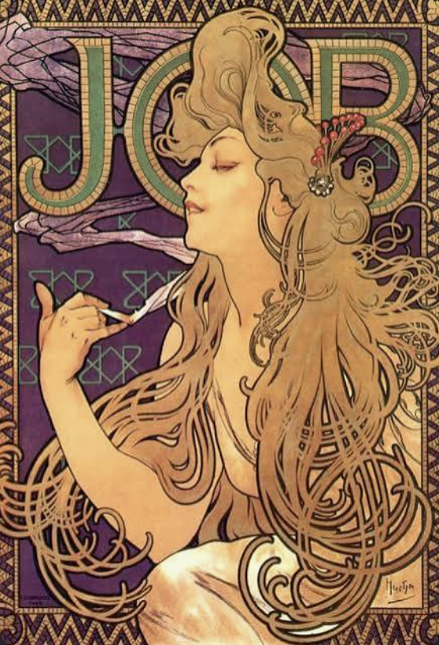
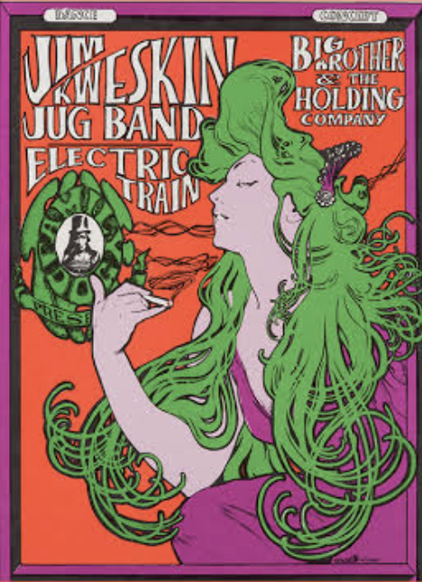
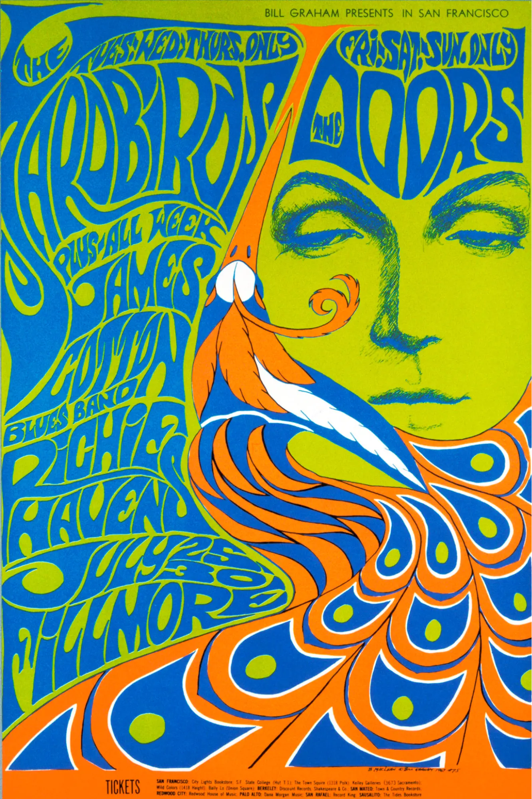

Art Nouveau

This art form was created to bring beauty back into grave cities during the time of an industrial boom. Artist living through this era in the 19 th century thought they’d bring art onto the streets to lighten up the city. The art nouveau movement affected many things, such as silverware, architecture, textiles and of course advertising posters. They use flat organic imagery and depiction of female figures (which was popularized by artist Alphonse Mucha) to bring life back into these dull cities. Artist took inspiration from Japanese print art called Ukiyo-e, where art was printed using carved wooden slabs, with colored different layers, that would finally come together to create a beautiful pieces. The art nouveau method was called lithography, essentially the same concept but with limestone slabs. The use of this started to decline, since the processes of making these posters became too expensive and labor-heavy.
Psychedelic Art

These posters are the most famous example of how psychedelic art was heavy influence by art nouveau. The most obvious note is the female figure that was taken from the art nouveau poster; she’s the same, but is colored different. The visuals on posters from both of these art styles are suppose to feel very flowy and organic. The words on these posters are meant to feel like art, we’ll eventually see how modern posters have lost this idea. Historically, these posters are both representation of rebellion against the norm. Art nouveau fighting against a rise in industrial scenery and psychedelic art that promotes a sense of freedom through drugs and music in America during a time of political conflict and war.
Music and Art

Typography was a major part of the Psychedelic era. At first glance, most viewers can recognize they are looking at words, but can’t make out what they see. The words on these posters usually have a tight leading and a decreased tracking which make it difficult to read and separate words. The words seems to not have a constant baseline, and are often wiggly and winding along the page. The words can often make up shapes as well. The colors clash, making the words feel like they are popping off the poster. And the brightness and overly saturated colors are overwhelming. These are all tactics to make the viewer get the feel of a psychedelic trip, since the use of psychedelic substances like LSD were commonly used during music festivals in the 60s-70s. Music was made to sound trippy with guitar riffs and solos because many artist would create music and perform under the influence of these drugs as well. So this type of art reached targeted audiences because of it’s wacky look.
3 Music festivals/ venues that used these kind of posters:
- Woodstock Music and Art Festival (1969)
- The Fillmore Auditorium (1967-1971)
- Avalon Ballroom (1965–1968)